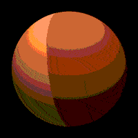
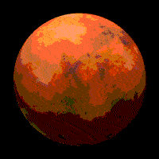
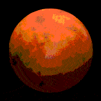
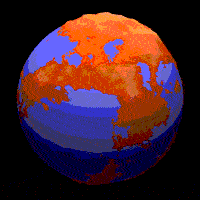
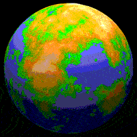
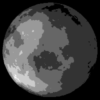
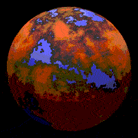
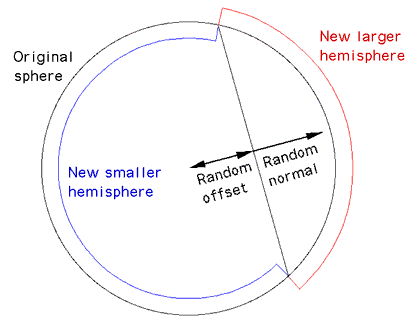
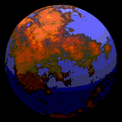
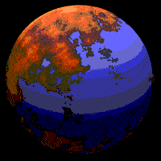

Κατασκευάζοντας ψεύτικους πλανήτες
Συγγραφέας: Paul Bourke
Οκτώβριος 2000
English version
Παρακάτω περιγράφεται μία μέθοδος δημιουργίας μοντέλων πλανητών με ρεαλιστική εμφάνιση. Η τεχνική είναι γνωστή εδώ και αρκετό καιρό και είναι συγχρόνως ένας κομψός και μη-προβλέψιμος τρόπος δημιουργίας τέτοιων ασύμμετρων επιφανειών.
Η συγκεκριμένη προσέγγιση που επιλέχθηκε εδώ έγινε για να επιτρέψει τα μοντέλα να χρησιμοποιηθούν σε μία ποικιλία πακέτων rendering, αφού είναι βασισμένη σε διαφορετικές διακυμάνσεις στην επιφάνεια μιας σφαίρας. Η ίδια προσέγγιση μπορεί εύκολα να τροποποιηθεί για να χειριστεί άλλες δομές δεδομένων.
|
Η βασική προσέγγιση είναι η εξής: αρχίζουμε με μία σφαίρα, σε κάθε επανάληψη επιλέγουμε ένα τυχαίο διάνυσμα, το οποίο ορίζει ένα επίπεδο που περνάει από το κέντρο της σφαίρας, αυξάνουμε το ύψος όλων των σημείων από την μία πλευρά κατά ένα μικρό μέγεθος, μειώνουμε το ύψος όλων των σημείων από την άλλη μεριά, .... , επαναλαμβάνουμε πολλές φορές.
Όσoν αφορά την εφαρμογή των όρων, η δοκιμή για το αν ένα σημείο στην επιφάνεια είναι στην μία πλευρά του επιπέδου ή στην άλλη, απλά απαιτεί μία σύγκριση μεταξύ της τιμής του διανύσματος του σημείου στην επιφάνεια και της απόλυτης. Σημειώστε επίσης ότι, εφόσον το διάνυσμα στα σημεία της επιφάνειας δεν αλλάζει, τα ύψη μπορούν να συσσωρευτούν και τα καθεαυτά σημεία να μετασχηματιστούν στο τέλος της επαναληπτικής διαδικασίας.
|

|
Η διαδικασία περιγράφεται παρακάτω.
0
Αυτή είναι η αρχική τέλειως λεία σφαίρα, σε αυτήν την συγκεκριμένη περίπτωση υπάρχουν περίπου 33.000 τριγωνικά πολύγωνα.
|

|
1
Στην πρώτη επανάληψη επιλέγεται ένα τυχαίο επίπεδο από την επιλογή ενός τυχαίου θετικού διανύσματος (το επίπεδο περνάει από το κέντρο της σφαίρας).
Τα σημεία στην μία πλευρά υψώνονται, αυτά στην άλλη πλευρά χαμηλώνονται.
Ένα φάσμα χρωμάτων του ’ρη χαρτογραφείται πάνω στο ύψος σε αυτό το παράδειγμα.
|

|
2
Η δεύτερη επανάληψη κάνει την διαδικασία να εφαρμοστεί σε ένα δεύτερο τυχαία επιλεγμένο επίπεδο. Τώρα υπάρχουν 3 διαφορετικά επίπεδα ύψους στην επιφάνεια της σφαίρας.
|

|
3
Η τρίτη επανάληψη.
|

|
10
Η δέκατη επανάληψη και τα πράγματα δεν φαίνονται ιδιαίτερα ενθαρρυντικά.
|

|
100
Η εκατοστή επανάληψη και ξαφνικά αρχίζει να φαίνεται ενδιαφέρον.
Σημειώστε ότι όπως σε πολλές τεχνικές fractal, η επιφάνεια είναι απόλυτα καθορισμένη από έναν αριθμό, αυτός είναι ο πρώτος τυχαίος αριθμό που "γέννησε" την ακολουθία των τυχαίων αριθμών. Μία νέα επιφάνεια δημιουργείται με την αλλαγή του "γεννήτορα" αριθμού, παλιές επιφάνειες μπορούν να αναπαραχθούν αν γνωρίζουμε αυτόν τον αριθμό.
|

|
1000
Στην χιλιοστή επανάληψη η γραμμική δομή που φαινόταν ακόμη στην 100-στή επανάληψη έχει χαθεί. Σε αυτήν την περίπτωση δεν υπάρχει μεγάλη συνέχεια σημείων λόγω της σχετικά μικρής ανάλυσης του σχηματισμού της σφαίρας.
|

|
’λλα παραδείγματα
Το παραπάνω παράδειγμα και τα επόμενα που ακολουθούν δημιουργήθηκαν σε ένα διαδραστικό περιβάλλον σε OpenGL. Αν και αυτό δημιουργεί την δυνατότητα να περιπλανηθούμε γύρω από τα μοντέλα και να τα εξερευνήσουμε, περιορίζει ωστόσο την ποιότητα του rendering. Η δημιουργία πιο εντυπωσιακών εικόνων αφήνεται στον αναγνώστη, χρησιμοποιώντας το πρόγραμμα rendering της αρεσκίας του.



Το φαινόμενο του αντικατοπτρισμού
Ένα πόρισμα αυτής της μεθόδου είναι ότι οι πλανήτες έχουν μία αντιδιαμετρική συμμετρία.
Ένα περίγραμμα ενός υψίπεδου στην μία μεριά του πλανήτη θα έχει ένα αντίστοιχο περίγραμμα στην απέναντι πλευρά του πλανήτη. Συγκεκριμένα, αν ο πλανήτης είναι γεμισμένος με νερό μέχρι ένα επίπεδο, το περίγραμμα της ξηράς στην μία πλευρά θα μοιάζει το ίδιο με το περίγραμμα από την άλλη πλευρά. Αυτό φαίνεται καθαρά στο παρακάτω παράδειγμα, ο ωκεανός στα αριστερά ταιριάζει (με την χορήγηση κάποιων αξόνων συμμετρίας) με την ξηρά στην απέναντι πλευρά του πλανήτη όπως φαίνεται στα δεξιά.


|
Αυτό το χαρακτηριστικό σπάνια γίνεται αντιληπτό, αν είναι πρόβλημα τότε ο παραπάνω περιορισμός όπου το επίπεδο συναντά το κέντρο του πλανήτη μπορεί να αφαιρεθεί. Σε αυτήν την περίπτωση δεν επιλέγουμε μόνο μία νόρμα αλλά επίσης ένα μεταβολέα μεγέθους. Η συνηθισμένη προσέγγιση είναι να μετακινήσουμε το επίπεδο με τον τυχαίο μεταβολέα παράλληλα στην κατεύθυνση της νόρμας. Αυτό φαίνεται επίσης να παράγει πιο καλοσχηματισμένους πλανήτες, το μειονέκτημα είναι ότι παίρνει περισσότερες επαναλήψεις για να φτάσουμε σε ένα συγκεκριμένο επίπεδο ανάλυσης.
|

|


Κώδικας
Δίνεται εδώ ένα ενδεικτικό πρόγραμμα που εφαρμόζει τα παραπάνω, και είναι μία απλή OpenGL εφαρμογή γραμμένη σε C:
planet.c και
planet.h. Αυτά πρέπει να αποτελούν μία καλή βάση για τον δικό σας πειραματισμό.
Για παράδειγμα, ανάλογα με την ικανότητα της κάρτας γραφικών σας, θα μπορούσατε ίσως να αυξήσετε την μέγιστη ανάλυση της σφαίρας, να δοκιμάσετε πιο ρεαλιστικά φάσματα χρωμάτων, να προσθέσετε ένα κάλυμα σύννεφων, κτλ. Θα με ενδιέφερε να δω φωτογραφίες από τα αποτελέσματα αυτής της αναζήτησης. Αυτός ο κώδικας επίσης υποστηρίζει frame sequential stereo
αν η OpenGL κάρτα σας το υποστηρίζει.....
Για να ανακαλύψετε την βασική λειτουργία αυτού του προγράμματος, μετά το compiling του δοκιμάστε να τρέξετε το "planet -h", αυτό θα σας δώσει τις επιλογές command line. Το δεξί κουμπί του πονικιού (γνωστό και ως GLUT) θα σας δώσει μία σειρά από τυχαία κατανεμημένες επιλογές.
Συνεισφορά από τον Julien Amsellem
για το 3DStudioMax
|